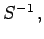
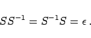
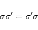
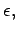
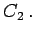
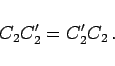

Inhalt Index DeskTop Bronstein

 Algebra und Diskrete Mathematik Klassische algebraische Strukturen Anwendungen von Gruppen
Algebra und Diskrete Mathematik Klassische algebraische Strukturen Anwendungen von Gruppen


Zu jeder Symmetrieoperation S gibt es eine inverse Operation  die S wieder ,,rückgängig`` macht, d.h., es gilt
|  | (5.178) |
Dabei bezeichnet  die identische Operation, die den gesamten Raum unverändert läßt. Die Gesamtheit der Symmetrieoperationen eines räumlichen Objektes bildet bezüglich der Hintereinander-Ausführung eine Gruppe, die im allgemeinen nichtkommutative Symmetriegruppe des Objektes. Dabei gelten die folgenden Beziehungen:
die identische Operation, die den gesamten Raum unverändert läßt. Die Gesamtheit der Symmetrieoperationen eines räumlichen Objektes bildet bezüglich der Hintereinander-Ausführung eine Gruppe, die im allgemeinen nichtkommutative Symmetriegruppe des Objektes. Dabei gelten die folgenden Beziehungen:
|  | (5.179) |
genau dann, wenn die zugehörigen Spiegelungsebenen identisch sind oder senkrecht aufeinander stehen. Im ersten Fall ist das Produkt die Identität  im zweiten die Drehung 
|  | (5.180) |
Das Produkt ist jeweils wieder eine Drehung. Im ersten Fall ist die zugehörige Drehachse die gegebene, im zweiten steht die Drehachse senkrecht auf den beiden gegebenen.